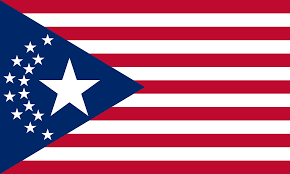
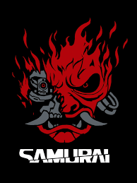

Norte Americano (NEUA) 
Robert John Linder(1988-2023), mais conhecido como Johnny Silverhand, é um artista muito conhecido e influente na América. Um ex-veterano militar dos EUA que definiu o movimento dos Republicanos para o que é hoje. Ele foi o vocalista da banda Samurai e uma das figuras mais proeminentes que lutaram contra o governo corrupto dos EUA e as Megacorporações. Johnny concentra a maior parte de sua raiva para a Corporação Arasaka, devido a eles sequestrarem sua namorada levando à sua suposta morte, que pode ou não ter sido culpa dele. Ele é carismático e muito charmoso. No entanto, Johnny também é conhecido por ser irracional, impulsivo e um manipulador, muitas vezes sendo descrito como um terrorista.
Clubes:
Conquistas:
Explodiu uma Bomba Termonuclear dentro de um prédio